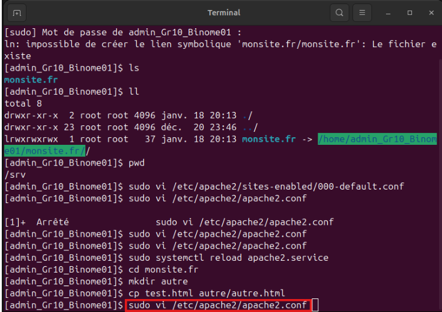
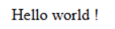
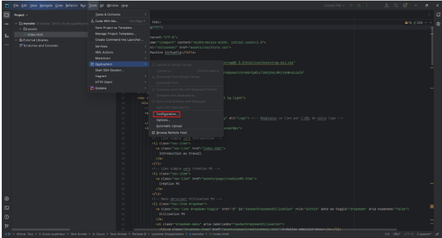
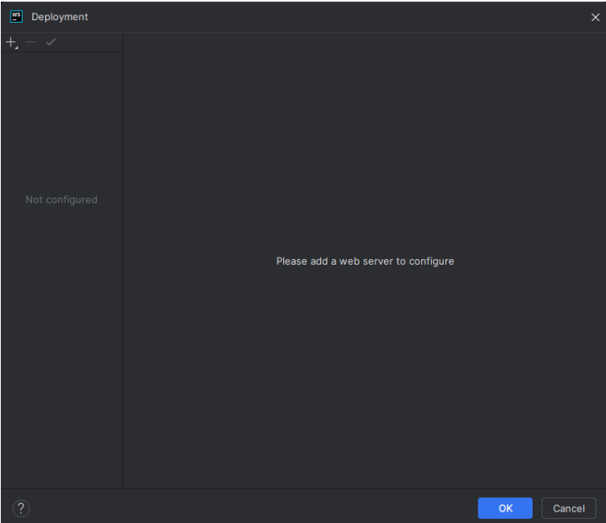
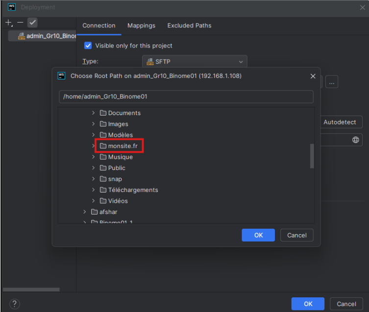

Configuration de WebStorm pour le déploiement

Dans le système Ubuntu, il y a un dossier par défaut nommé /srv dont le but est
de pouvoir stocker les différents services. Donc, on y accède en tapant la commande cd /srv .

Ici, on fait un lien entre le dossier /srv et monsite.fr en tapant la commande :
sudo ln -s /home/admin_Gr_10_Binome01/monsite.fr/ monsite.fr

On regarde le contenu du dossier /srv.

En tapant la commande ll, on peut voir l’ensemble des informations du contenu du dossier /srv.
Ici, on peut notamment voir un lien symbolique monsite.fr qui pointe vers /home/admin_Gr_10_Binome01/monsite.fr/.
Ce lien est le lien que nous avons créer précédemment.

Ici, lorsque l’on tape la commande pwd, elle nous indique que nous sommes bien dans le répertoire /srv.
Nous on veut faire en sorte que monsite.fr s’affiche lors de la commande précedente.
Alors, on va modifier la configuration :

On tape la commande, sudo vi /etc/apache2/sites-enabled/000-default.conf .

On modifie /home/admin_Gr10_Binome01/monsite.fr par /srv/monsite.fr.

Ensuite, on tape la commande : sudo vi /etc/apache2/apache2.conf pour pouvoir ajouter la directive.

La partie en rouge doit être supprimer, car cette directive n’est plus nécessaire
et les # doivent être aussi supprimer pour que cette directive soit bien activée.
Après activation de la directive /srv.
On redémarre la page avec la commande : sudo systemctl reload apache2.service .
Après, c’est manipulation on peut observer le comportement de notre site lorsque l’on ne précise pas de page :
On peut observer que le site se transforme en un gestionnaire de fichier.
Nous allons simuler sur monsite.fr, la présence d’un autre répertoire. Alors, on se met dans le répertoire monsite.fr à l’aide de la commande cd.
On crée un répertoire nommé autre.
Et, on copie le test dans notre répertoire autre.

Lorsque l’on recharge la page, on observe qu’on est capable de naviguer de directory en directory.
Cela n’est pas ce que l’on veut.

Pour enlever cela, on iva dans la configuration de la page en tapant la commande
sudo vi /etc/apache2/apache2.conf .
Ici, il faut supprimer cette configuration dans cette directive.
Puis, on redémarre le système.
Lorsque je ne précise pas de fichier, il nous affiche ce message .
Cela est dû au fait qu’il nous force à avoir un fichier qui s’appelle index.html .
On renomme le fichier test.html en index.html .

On peut voir que cela affiche bien le contenu de test.html car on a modifié le nom par index.html, soit le nom par défaut.
Maintenant, il faut aller sur Webstorm.
Il faut aller dans les 3 barres en haut à droite,
Et, aller dans l’Onglet “tools”,
Puis, cliquer sur “Deployement”

Et, ainsi, cliquer dans “configuration”.

Nous arrivons sur cette page.
Ici, on clique sur SFTP. (On fait donc un new SFTP)
Ici, on met le nom de notre serveur. Ici, on l’appelle admin_Gr10_Binome01.
Ici, on a besoin d’une configuration SSH. Donc, on clique sur les 3 petits points.
Ici, on clique sur le plus pour bien configurer SSH.
L’hôte est soit l'adresse ip ou soit le nom de la machine. Ici, on l’appellera par l’adresse ip de la machine.
Puis, il faut le nom d’utilisateur qui est pour nous admin_Gr10_Binome01. Et, il faut écrire le mot de passe sur la rubrique "Password". Puis, cliquer sur “Save password”.
Ainsi cliquez sur “Test Connection” pour vérifier si la configuration est opérationnelle.
Ce message indique que la configuration est bien opérationnelle. Ensuite, on clique sur ”OK” puis encore sur “OK” jusqu’à arriver sur cette page :
Ici, on clique sur “Autodetect” pour voir si l’on a bien accès à la machine virtuelle et si c’est le cas, cela nous affichera le répertoire par défaut de l’utilisateur que j’ai utilisé.
On peut voir que dans notre cas, le répertoire par défaut de l’utilisateur que j’ai utilisé est /home/admin_Gr10_Binome01.
Mais ici, ce qui nous intéresse, ce n’est pas d’aller dans la racine mais dans le répertoire monsite.fr.
Alors, ici on clique sur l'icône dossier,

Et, on clique sur le répertoire monsite.fr , puis on clique sur “OK” une fois le répertoire sélectionné.
Donc, le répertoire principal auquel je me connecterai sera /home/admin_Gr10_Binome01/monsite.fr .
On clique sur l’onglet “Mappings”.
Il faut indiquer que sa sera à la racine que les dossiers et fichiers du répertoire courant seront exploités de l’autre côté. Puis, on clique sur “OK”.
Ensuite, on clique sur l’onglet “tools”, puis sur “Deployment”, et on vérifie si “Automatic upload” est coché.
Il faut aller dans la page “Remote Host” qui est l’état de connexion du serveur. Ici, on choisit admin_Gr10_Binome01.
On clique droit sur le fichier qui contient l’ensemble des fichiers html et css, puis on clique sur “Deployment”, puis sur “upload to” le nom de notre serveur soit pour nous admin_Gr10_Binome01.
Et, on clique sur “Yes”.
Lorsque que l’on clique sur les flèche, cet onglet s’ouvre et nous indique que tous les fichiers ont bien été envoyés.
Lorsque l’on actualise la page de la machine, on peut voir que l’on a bien le bon affichage que l’on attendait, soit le site que nous cherchions à mettre dans la machine.